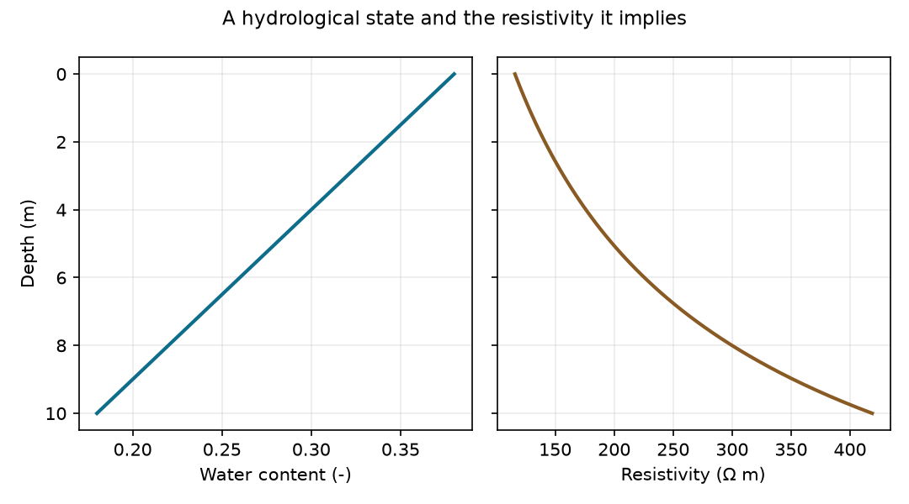

10-minute quickstart#
What you will do#
Turn a hydrological state into the geophysical property a survey responds to, and plot the pair. That conversion is the hinge of every workflow in this package: it is what lets a hydrological model predict a measurement, and what lets a measurement be read back as water content.
You will not need field data, a downloaded dataset, an API key, or any of the optional geophysics engines.
Requirements#
Python 3.8 or newer and the core install below. NumPy, SciPy and Matplotlib come with it.
1. Install#
pip install pyhydrogeophysx
2. Create a hydrological state#
A depth profile through the unsaturated zone: wet near the surface, drier with
depth, in a soil of uniform porosity. In a real workflow these arrays come out
of MODFLOW or ParFlow instead of out of numpy.
import numpy as np
depth = np.linspace(0.0, 10.0, 60) # metres below ground
porosity = np.full_like(depth, 0.42) # volume fraction
water_content = 0.38 - 0.020 * depth # volumetric, drying with depth
3. Convert it to resistivity#
water_content_to_resistivity applies the Waxman-Smits relationship. It needs
the porosity as well as the water content, because what controls the electrical
response is the saturation, which is the ratio of the two.
from PyHydroGeophysX.petrophysics import water_content_to_resistivity
resistivity = water_content_to_resistivity(
water_content=water_content,
rhos=120.0, # resistivity at full saturation, ohm m
n=2.0, # saturation exponent
porosity=porosity,
sigma_sur=1.0 / 500.0, # surface conductivity of the grains, S/m
)
print(resistivity.min(), resistivity.max()) # about 116 and 419 ohm m
4. Plot the result#
import matplotlib.pyplot as plt
fig, (left, right) = plt.subplots(1, 2, figsize=(7.2, 4.0), sharey=True)
left.plot(water_content, depth)
left.set_xlabel("Water content (-)")
left.set_ylabel("Depth (m)")
right.plot(resistivity, depth)
right.set_xlabel("Resistivity (ohm m)")
left.invert_yaxis()
fig.tight_layout()
plt.show()
{kind=link}

The figure the code above produces.#
What just happened?#
A twofold drop in water content produced a nearly fourfold rise in resistivity.
That leverage is why electrical methods are useful for hydrology, and it is also
where the assumptions live: the exponent n, the saturated resistivity
rhos and the surface conductivity are properties of the material, and a
survey cannot recover water content more precisely than they are known.
Two consequences shape the rest of the documentation.
Going forwards, from a model to a prediction, this conversion is applied to a mesh rather than to a profile, and the resulting resistivity model is handed to a forward operator that simulates what a survey would record.
Going backwards, from measurements to hydrology, the same relationship is inverted, and the petrophysical uncertainty has to be propagated with it. Ex. Monte Carlo Uncertainty Quantification for Hydrologic Properties Estimation does that with a Monte Carlo ensemble.
Continue to a complete ERT workflow#
Ready to predict survey measurements? Install the geophysics engines and continue to the full hydrology-to-ERT workflow, which adds profile interpolation, geological layers, mesh generation and the forward operator.
pip install "pyhydrogeophysx[geophysics]"
Choose your next workflow#
Workflows, organised by what you already have.
Methods, if you know which measurement you are working with.
Examples for complete, downloadable scripts.
Desktop Studio to do the same work through an interface instead of a script.